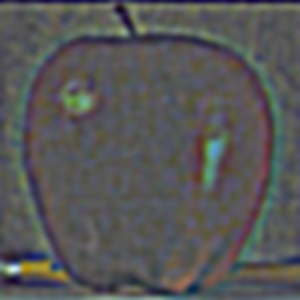
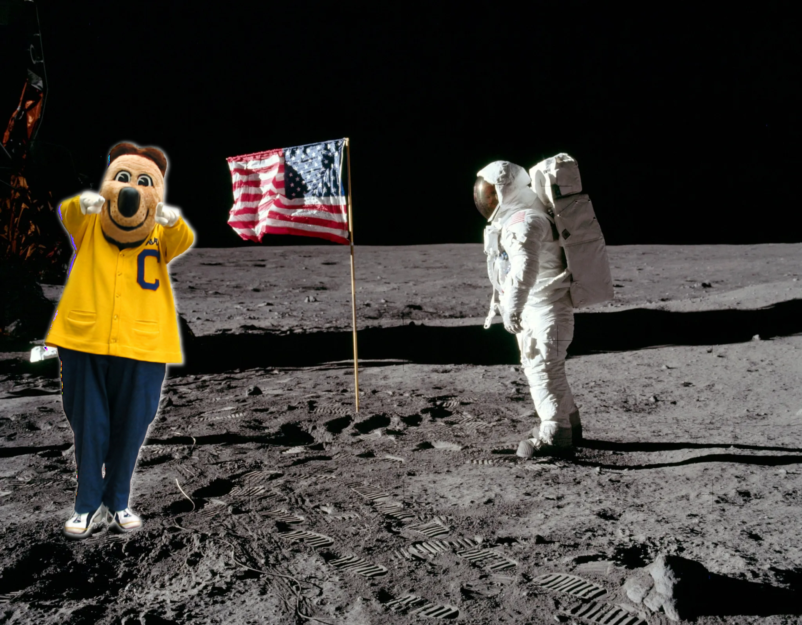
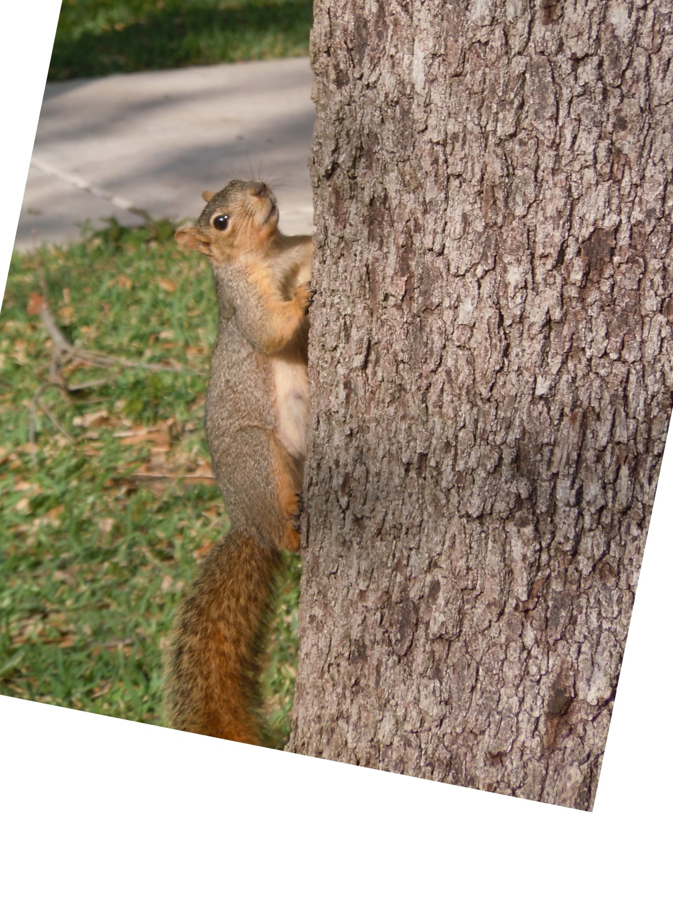

Project Overview
The following project explores the relationship between the frequencies of images and how one can analyze and manipulate them to acheive a variety of interesting effects.
Fun with Filters!
For this part, we will be exploring basic edge detection filters using this image of a camera man:

Part 1.1: The Finite Difference Operator
First, we take the humble difference filters Dx and Dy:

and convolve them with the image to detect the vertical and horizontal edges of the camera man photo. This is the same as taking the partial derivative of the image in the x and y directions.
| Vertical Edges | Horizontal Edges |
|---|---|
 |
Next, we can compute the gradient magnitude of the image by taking the square root of the sum of the squares of the x and y partial gradient images (see above). We then binarize the gradient magnitude image to get the following edge map to suppress as much noise as possible while still preserving as many true edges as possible.
| Gradient Magnitude | Binarized Gradient Magnitude |
|---|---|
| Note the "fake edges" and noise caused by the grass. |
Part 1.2: Derivative of Gaussian (DoG) Filter
As seen above, the gradient magnitude image is rather noisy. To address this, we can apply a Gaussian filter as a smoothing operator to reduce these noisy artifacts when calculating the gradient magnitude.
We can use cv2's getGaussianKernel to generate a 1D Gaussian filter, which we then take the outer product of with its transpose to generate a 2D Gaussian filter.
We apply this Gaussian filter below:
| Original Image | Gaussian Filtered Image |
|---|---|
|
|
We now take the partial derivative of the Gaussian blurred image in the x and y directions, like before:
| Vertical Edges | Horizontal Edges |
|---|---|
We can see that compared to the previous edge map images, these ones feature thicker, smoother lines and less noise, likely due to the Gaussian filter.
Finally, we compute the gradient magnitude and binarize it, just like before:
| Gradient Magnitude | Binarized Gradient Magnitude |
|---|---|
| Note the reduction in noise compared to previously. |
Compared to the previous gradient magnitude image, this one has smoother, thicker lines. Although smaller details are not as emphasized or are seemingly missing, the overall amount of noise in the image has decreased immensely.
We had to compute two separate convolutions in order to generate the gradient magnitude image. This can become computationally expensive for batch operations or larger images!
However, we can combine these two operations into one by convolving the image with the derivative of the Gaussian (DoG) filter (in the x and y directions, respectively). The DoG filters (DoG in the x and y directions, respectively) are the convolutions of the Gaussian filter with each of the finite difference operators.
Due to the commutative and associative properties of convolution, this will result in exactly the same gradient maps as before, just with fewer computations.
Pictured below are the kernels of the DoG filters in the vertical and horizontal directions:
| DoG Filter in the x direction | DoG Filter in the y direction |
|---|---|
| This detects vertical edges. | This detects horizontal edges. |
We convolve the image with each of the DoG filters, compute the gradient magnitude, and binarize it. Note that this looks identical the results from above.
| Vertical Edges | Horizontal Edges |
|---|---|
| Gradient Magnitude | Binarized Gradient Magnitude |
|---|---|
| Same amount of noise reduction. |
Fun with Frequencies!
Part 2.1: Image "Sharpening"
In this section, we'll explore a basic sharpening technique.
This algorithm involves blurring an image (using a Gaussian filter), which acts as a lowpass filter. We can then subtract the original image from the blurred image to retrieve the high frequencies of the image (this operation acts like a high pass filter). Finally, we add scale these high frequency components by some alpha, and add it to the original image to retreive a sharpened version of the original image.
This is also known as the "unsharp mask" filter.
Below are some examples of this in action:
| Original Image: | Blurred Image: | High Frequencies: |
|---|---|---|
 |
||
| Original Image: | Sharpened Images: | |||
|---|---|---|---|---|
| Alpha = 0.7 | Alpha = 1 | Alpha = 2 | Alpha = 5 | |
|
||||
| Mmmm... deep-fried images. |
Let's see how the unsharp mask filter works for images with lots of noise (aka high frequencies):
| Original Image: | Sharpened Images: | |||
|---|---|---|---|---|
| Alpha = 0.5 | Alpha = 1 | Alpha = 2 | Alpha = 5 | |
 |
||||
| A photo I took in Yosemite this summer. Lots of grain due to analog film. | Grain becomes more perceptible, along with grass and trees. | Noise is extremely apparent. Can see details more clearly, but at a cost. |
As an experiment, I decided to see what would happen if I blurred an already sharpened image, and then re-sharpened it. These are the results:
| Original Image: | Sharpened Image: | Sharpened, then blurred: | Sharpened, blurred, then re-sharpened: |
|---|---|---|---|
| Credits to Anton Darius. |
In a way, it acts similar to a bad-reject filter-- we (attempt to) preserve certain higher frequencies in the original image while removing other high frequencies and keeping lower ones.
Part 2.2: Hybrid Images
Hybrid images are images that appear to be one thing when viewed up close, but look like another thing when viewed from afar.
To create hybrid images, we first select two images, which we'll call image_lf and image_hf. We extract the low frequencies from image_lf by convolving image_lf with a Gaussian filter, and the high frequencies from image_hf with a Laplacian filter, which acts similarly to a high pass filter.
(Note that for this project, I implemented two different Laplacian filters: the one shown on this page gets high frequencies by subtracting the image from the blurred versin, and the other is based off of the SIGGRAPH 2006 paper by Oliva, Torralba, and Schyns.)
We then return a weighted sum of the low and high frequency images.
Pictured below is an example with a man, a cat, and other images:
| High frequency image: | Low frequency image: | Hybrid image: | Blurred hybrid image: |
|---|---|---|---|
 |
 |
||
| Derek Thompson. | Nutmeg! | Meant to imitate viewing from afar. | |
|
|
||
| Nutmeg! | Derek Thompson. | Meant to imitate viewing from afar. |
Let's compare the two laplacian filters! Using the other Laplacian filter method from the paper, here's another result:
| High frequency image: | Low frequency image: | Hybrid image: | Blurred hybrid image: |
|---|---|---|---|
Here's the same images using the simple Laplacian filter described here (my favorite result):
| High frequency image: | Low frequency image: | Hybrid image: | Blurred hybrid image: |
|---|---|---|---|
Here are the 2D Fourier Transform plots for the above images:
| Dean Norris Angry FFT (high frequency image): | Dean Norris Happy FFT (low frequency image): | High Frequency Image Filtered FFT: | Low Frequency Image Filtered FFT: | Hybrid Image FFT: |
|---|---|---|---|---|
This hybrid image didn't work out nicely, sadly:
| High frequency image: | Low frequency image: | Hybrid image: | Blurred hybrid image: |
|---|---|---|---|
| A photo I took at Mt. Shasta. | A photo study I painted based off of the photo. |
I suspect this hybrid didn't work out nicely because of a few reasons: The images both have similar colors, are both very visually busy (lots of high frequency), and aren't scaled exactly (my painting is a bit off).
Part 2.3: Gaussian & Laplacian Stacks
Below are the Laplacian stacks of these apple and orange images. We'll be seeing how to use them in the next part.
Gaussian stacks:
| Level 0: | Level 1: | Level 2: | Level 3: | Level 4: | |
|---|---|---|---|---|---|
| Apple: |  |
||||
| Orange: |  |
Laplacian stacks:
| Level 0: | Level 1: | Level 2: | Level 3: | Level 4: | Level 5: | Level 6: | |
|---|---|---|---|---|---|---|---|
| Apple: |  | ||||||
| Orange: |
Recreating Figure 3.42 from Szelski (Ed 2) page 167:
| Right side: | Left side: | Full blend (hybrid image): | |
|---|---|---|---|
| Level 0: |  |
||
| Level 1: | |||
| Level 2: | |||
| Level 3: | |||
| Level 4: | |||
| Level 5: | |||
| Level 6: |
Part 2.4: Multi-resolution Blending
With the Laplacian and Gaussian stacks created, we can use them to blend images together using a mask!
Below are some results:
| Left Image: | Right Image: | Mask: | Blended Image: |
|---|---|---|---|
 |
 |
||
| Apple | Orange | Mask | Applange |
|
|
||
| Orange | Apple | Mask | The true oraple |
 |
|||
| A photo study I made using the image on the right. | Credits to Allie Derbshire | Mask | Sleepy foxes IRL; this blend could look even smoother if I had adjusted the colors of my painting to match the original image. |
|  | |||
| Oski! (removed image from background before masking in PS) | The Apollo moon landing | Mask | Blended image; didn't turn out as nicely due to the mask + the original Oski background was bright. |
|  | |||
| Squirrel! (pre-aligned via PS) | The Campanile | Mask | Attack on Squirrel! |
Reflection:
I had a ton of fun with this project! The biggest things I learned were how edge dectection filters work, and how we can blend images using only a mask, and the high and low frequencies of images. I also learned how we can use the gaps in human perception to our advantage to create optical illusions and even compress images. JPG is pretty cool in that regard.